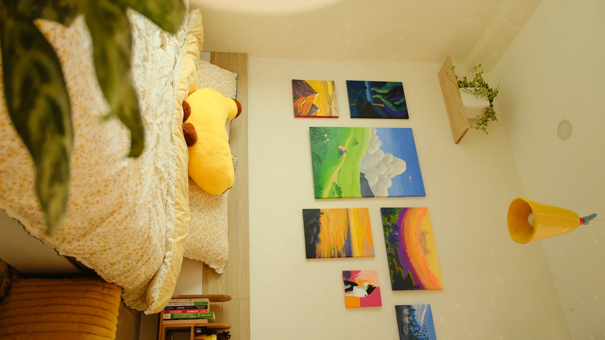
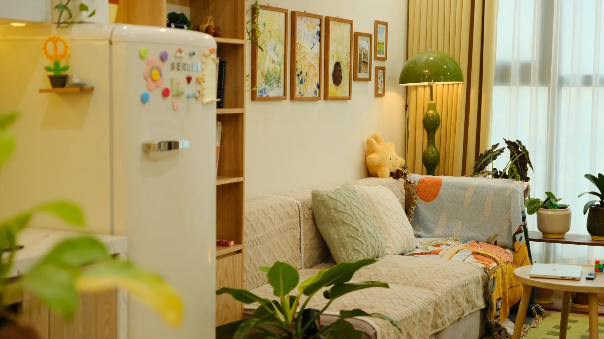
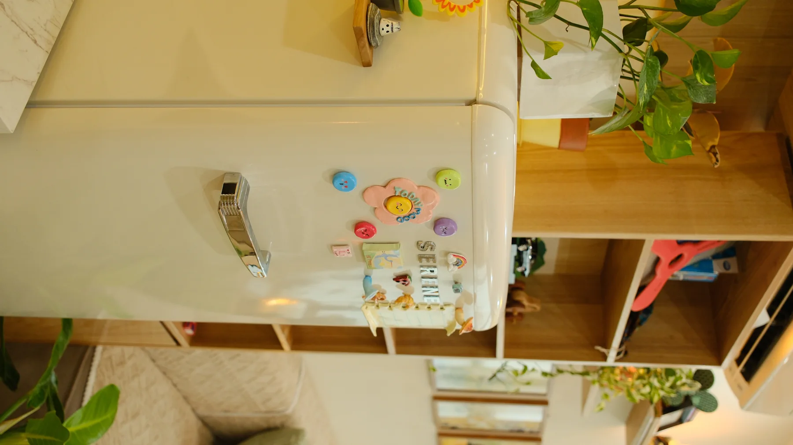

PRIVATE HOMESTAY · TRIỀU KHÚC, THANH XUÂN
Một khoảng riêng
cho hai người.
DearSunday là private homestay dành cho 1–2 người ở khu vực Triều Khúc, Thanh Xuân, Hà Nội. Một căn phòng riêng để nghỉ ngơi, kỷ niệm và cùng nhau làm điều gì đó mới.



Dành cho 1–2 người
Không gian riêng để nghỉ ngơi và tận hưởng khoảng thời gian bên nhau.
Chọn khung giờ
Ban ngày 12:30–20:30 · Qua đêm 14:00–11:00 hôm sau. Nhắn Page để hỏi lịch trống.
Cùng tạo kỷ niệm
Có thể chọn hoạt động vẽ, nặn đất sét, nấu ăn hoặc combo kỷ niệm.
CHẬM LẠI MỘT CHÚT
Không chỉ là một căn phòng.
Một buổi hẹn có thể là lúc cùng nhau thử một điều mới, không cần lên lịch trình thật cầu kỳ.
CÂU HỎI THƯỜNG GẶP
Để bạn dễ hình dung.
DearSunday ở khu vực nào?
DearSunday ở khu vực Triều Khúc, Thanh Xuân, Hà Nội. Địa chỉ cụ thể được gửi riêng sau khi đặt.
Có thể hỏi lịch trống thế nào?
Nhắn trực tiếp Page DearSunday và gửi từ khóa “Sun” để hỏi lịch. Lịch cần được Page xác nhận.
Có những khung giờ nào?
Khung ban ngày 12:30–20:30 hoặc qua đêm 14:00–11:00 hôm sau. Hãy nhắn Page xác nhận lịch và thông tin mới nhất.
Hẹn nhau ở DearSunday?
Nhắn Page để xem ảnh, hỏi lịch trống và nhận địa chỉ riêng sau khi đặt.
Mở Facebook DearSunday ↗